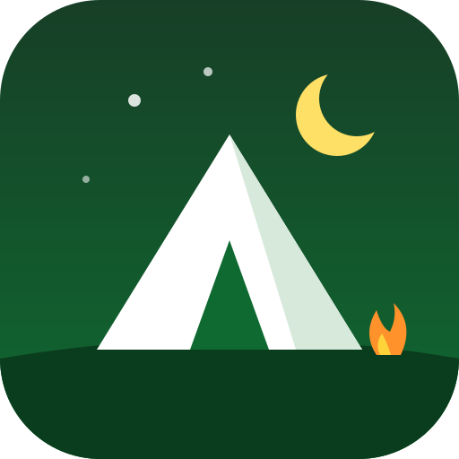

공공데이터(국립공원, 상수원보호구역 등 경계)와 지자체 조례를 바탕으로 노지캠핑 가능 여부를 색으로 표시합니다.
어디서든 쓰레기 투기·불법 취사(불 피우기)는 경범죄처벌법·산림보호법 등으로 처벌될 수 있습니다.
본 지도는 참고용이며 법률 자문이 아닙니다. 현장 안내판과 지자체 공지가 우선합니다. 구역 표시의 체크박스로 지도에서 켜고 끌 수 있어요.
데이터 출처: 브이월드(국토교통부 등), 공공데이터포털(국립공원공단·산림청·한국관광공사 고캠핑), OpenStreetMap(배경지도·지역 검색 Nominatim). 공공데이터는 각 기관의 이용 조건(공공누리 등)을 따릅니다. 지도 구성·분류·코드 © 2026 KimJaeYoon01. 무단 복제·수정·재배포를 금지합니다. 방문 통계는 GoatCounter 로 집계합니다 (쿠키를 쓰지 않고 개인을 식별하지 않음). 내 위치는 브라우저 안에서만 쓰이고 저장·전송되지 않습니다. 개인정보처리방침